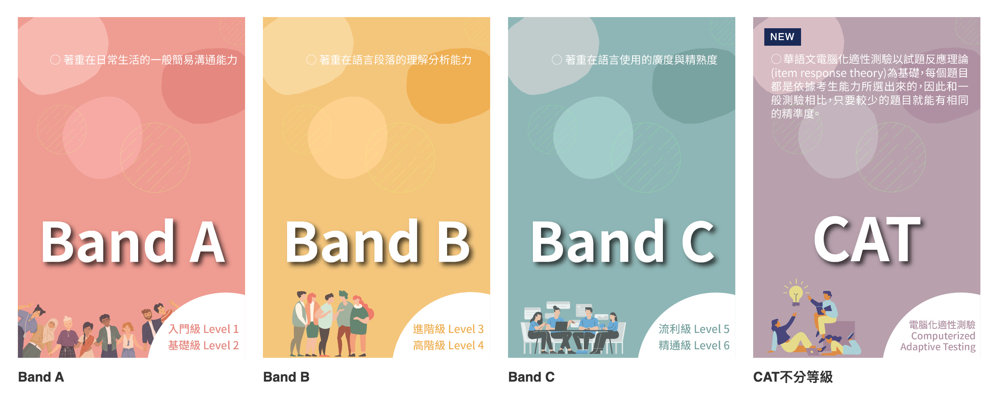

Elliott Jones
New Taipei City


Close to a decade in Taiwan and mainland China. Near-native level Mandarin Chinese fluency. Have worked for the British government in Shanghai and for many of Taiwan’s top hardware and software companies.
My First Attempt at Taiwan's TOCFL Exam
Posted April 17, 2024 by Elliott Jones
{kind=link}

On April 13th, I took the TOCFL (Test of Chinese as a Foreign Language) Listening & Reading exam at Chinese Culture University in Da’an, Taipei City.
The TOCFL is Taiwan's Mandarin Chinese proficiency exam for non-native speakers.
I booked the exam a month or two in advance, having never taken a TOCFL exam before.
Goal
Despite exclusively speaking Mandarin Chinese with my wife at home, and with my colleagues at work for many years—an experience that I believe has brought my everyday speaking level close to TOCFL Level 5—my goal was to achieve Level 4. This was because of my slow reading speed and limited exposure to the formal, academic Chinese often used in higher-level TOCFL exam questions. Such language is not something I frequently encounter in real-life situations or even in work meetings.
Below is a chart I made roughly comparing the TOCFL to HSK 3.0 and HSK 2.0.

Preparation
Having never studied Chinese in a formal school setting and being entirely self-taught, I decided to prepare for the exam using the same methods I had used to learn Chinese before—mainly through apps.
Flashcards
My primary concern was that my character recognition and speed were insufficient, so I signed up for the 21-day free trial of Hack Chinese. This platform is essentially a more polished version of Anki or Pleco flashcards, with many pre-assembled word lists. While I found the example sentences to be strange (and not always available in Traditional Chinese), the dictionary search lacking, and the definitions not consistently ordered from most to least common, the real value of Hack Chinese for me lay in its progress tracking. For instance, I marked thousands of words I already knew as ‘assumed,’ then added the TOCFL Level 4 word list to my queue. This let me see how many Level 4 words I already knew and how many remained. The system would then automatically add new Level 4 words to my daily sessions. Normally, I think this is an inefficient way to learn, but since I already knew the meanings of most Level 4 words and just needed to memorize the characters, it worked well for me.
However, I didn’t have much time to study with Hack Chinese over the month and a half before the exam. We had just bought a new apartment, and I was busy decorating up until the exam date. By the time the exam arrived, there were still over a thousand words in the TOCFL Level 4 word list that I couldn’t recognize, according to Hack Chinese. This would prove to be a disadvantage during the exam.
Podcasts
I also listened to several podcast episodes, primarily from Dashu Mandarin and Learn Taiwanese Mandarin. In my opinion, Learn Taiwanese Mandarin is better for learning Chinese, as the host explains vocabulary and content more thoroughly. However, it is too basic for me. I can understand about 99.9% of the content in an average episode, making it an excellent form of comprehensible input, but it doesn’t teach me anything new. Dashu Mandarin, on the other hand, is more appropriate for my current level, introducing vocabulary that isn’t commonly used in Taiwan but still appears on the TOCFL exams.
Graded Readers
The third resource I used to prepare was Du Chinese. I think the Upper Intermediate and Advanced levels on Du Chinese closely match the type of content found in Band B of the TOCFL exam, which includes Levels 3 and 4. Reading is my weakest skill, so tackling the Advanced level on Du Chinese was quite challenging. Due to time spent decorating my new apartment, I didn’t have much time to dedicate to Du Chinese, but I’m very happy with the platform overall.
Mock Exams
I also completed two Band B mock exams and achieved a Level 4 grade on both. A few days before my exam, I discovered a CAT mock exam, which didn't exist previously. The CAT (Computerized Adaptive Test) adjusts question difficulty based on your responses and determines your level at the end. The advantage of this format is that all candidates take the same exam, regardless of their level, so you don’t need to know your exact proficiency beforehand. My April 13th exam was a CAT exam.
The Exam
Location and Exam Room
The exam took place at the School of Continuing Education, Chinese Culture University, in Da’an District at 10:00 AM on April 13th, 2024. I arrived early, as advised by the TOCFL website, but was told I couldn’t check in or enter the exam room until 10:00. I waited downstairs until it was time to head to the third floor and sign in. Surprisingly, the full English and Chinese names of all test-takers were displayed on a large poster for everyone to see. While this felt odd, it did allow me to estimate the ethnic composition of the test-takers. In my room, roughly 80–90% were Vietnamese, with most of the remainder being Japanese, apart from myself and two non-Asian women.
The exam room wasn’t ideal for focus. The floor was squeaky, and the staff frequently walked around, creating distractions. Additionally, when test-takers finished, they often dragged their chairs loudly while leaving. For my next exam, I plan to ask if earplugs are allowed.
The CAT Format
The CAT format adjusts question difficulty based on your previous answers. In my experience, this makes the exam harder and less accurate. Initially, the questions felt like Band B, but after answering them correctly, I was presented with what seemed like Band C-level questions. When I likely got Band C questions wrong, instead of reverting to Band B questions—my target level—the system gave me Band A questions. This pattern of fluctuating difficulty continued throughout the exam. Unfortunately, I felt like I answered very few Band B questions, despite aiming for that level. The Band C questions required reading long passages, which drained my energy and affected my performance on Band B questions later. It seems most TOCFL exams now use the CAT format.
My Mistake
Although I used the bathroom 20 minutes before the exam, I needed to go again about 10 minutes into the reading section. This was a major distraction and forced me to guess on the last three or four questions. I wish there was a short bathroom break between the listening and reading sections. Next time, I’ll avoid drinking anything for several hours before the exam.
My Result
At the end of the CAT exam, your score and level are displayed on-screen. I scored 550 in listening and 560 in reading. To pass Level 4, I needed 555 in listening and 570 in reading, so I was five points short in listening and ten points short in reading. While needing the bathroom likely cost me the necessary points in reading, the listening score would have still prevented me from passing Level 4.

Next Steps
My next TOCFL exam, also in the CAT format, is scheduled for May 18th, 2024. I will once again aim for Level 4. Additionally, I have a Band C speaking and Band C writing exam scheduled for May 19th, 2024. Ideally, I would have taken Band B speaking and writing tests, but these aren’t currently available. I stand a small chance of passing the Band C speaking test, as my spoken Chinese is excellent and my accent is very native-like. However, I’m likely to fail the Band C writing test.